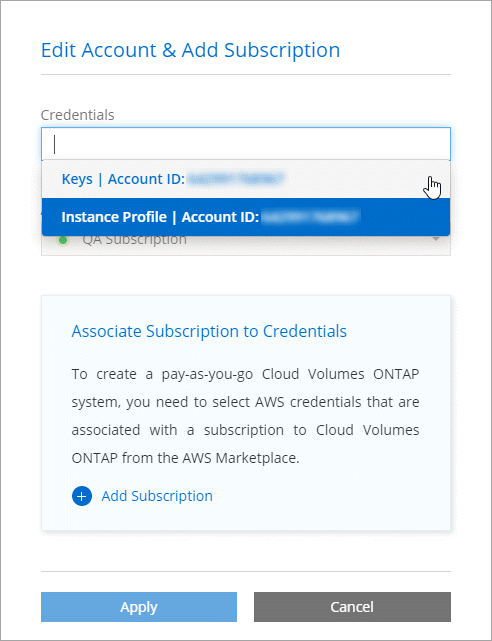
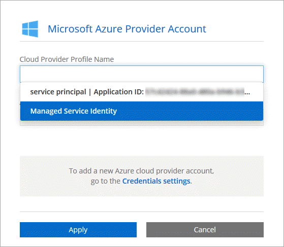
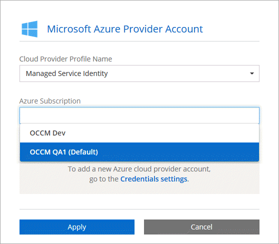

クラウドプロバイダーアカウントをCloud Managerに追加する GitHubで編集 ドキュメントの変更をリクエストする
寄稿者
Cloud Volumes ONTAPを異なるクラウドアカウントにデプロイする場合は、それらのアカウントに必要な権限を付与してから、Cloud Managerに詳細を追加する必要があります。
Cloud CentralからCloud Managerをデプロイすると、Cloud Managerは、Cloud Managerをデプロイしたアカウントのクラウドプロバイダーアカウントを自動的に追加します。既存のシステムにCloud Managerソフトウェアを手動でインストールした場合、最初のクラウドプロバイダーアカウントは追加されません。
AWSアカウントをセットアップしてCloud Managerに追加する
Cloud Volumes ONTAPを異なるAWSアカウントにデプロイする場合は、それらのアカウントに必要なアクセス許可を提供し、Cloud Managerに詳細を追加する必要があります。アクセス許可を提供する方法は、Cloud ManagerにAWSキーを提供するか、信頼できるアカウントのロールのARNを提供するかによって異なります。
AWSキーを提供するときにアクセス許可を付与する
Cloud ManagerにIAMユーザーのAWSキーを提供する場合は、そのユーザーに必要なアクセス許可を付与する必要があります。 Cloud Manager IAMポリシーは、Cloud Managerが使用できるAWSアクションとリソースを定義します。
Cloud ManagerポリシーページからCloud Manager IAMポリシーをダウンロードします 。
IAMコンソールから、Cloud Manager IAMポリシーからテキストをコピーして貼り付けることにより、独自のポリシーを作成します。
IAMロールまたはIAMユーザーにポリシーをアタッチします。
これで、アカウントに必要な権限が付与されました。 これでCloud Managerに追加できます 。
他のアカウントでIAMロールを引き受けることでアクセス許可を付与する
IAMロールを使用して、Cloud ManagerインスタンスをデプロイしたソースAWSアカウントと他のAWSアカウントの間に信頼関係を設定できます。その後、Cloud Managerに信頼済みアカウントからのIAMロールのARNを提供します。
Cloud Volumes ONTAPをデプロイするターゲットアカウントに移動し、 別のAWSアカウントを選択してIAMロールを作成します 。
必ず以下を実行してください。
Cloud Managerインスタンスが存在するアカウントのIDを入力します。
Cloud Manager IAMポリシーを添付します 。これは、 Cloud Managerポリシーページから入手できます 。
![AWS IAMコンソールの[ロールの作成]ページを示すスクリーンショット。 [信頼できるエンティティの種類を選択]で](./media/screenshot_iam_create_role.gif)
Cloud Managerインスタンスが存在するソースアカウントに移動し、インスタンスにアタッチされているIAMロールを選択します。
[ 信頼関係]> [ 信頼関係の編集]をクリックします 。
「sts：AssumeRole」アクションと、ターゲットアカウントで作成したロールのARNを追加します。
例
{ "Version": "2012-10-17", "Statement": { "Effect": "Allow", "Action": "sts:AssumeRole", "Resource": "arn:aws:iam::ACCOUNT-B-ID:role/ACCOUNT-B-ROLENAME" } }
これで、アカウントに必要な権限が付与されました。 これでCloud Managerに追加できます 。
AWSアカウントをCloud Managerに追加する
必要な権限を持つAWSアカウントを提供した後、アカウントをCloud Managerに追加できます。これにより、そのアカウントでCloud Volumes ONTAPシステムを起動できます。
Cloud Managerコンソールの右上にある[設定]アイコンをクリックし、[ クラウドプロバイダーとサポートアカウント]を選択します 。

[ 新しいアカウントの追加]をクリックして、[ AWS ]を選択します。
AWSキーを提供するか、信頼できるIAMロールのARNを提供するかを選択します。
ポリシー要件が満たされていることを確認し、[ アカウントの作成]をクリックします 。
新しい作業環境を作成するときに、[詳細と資格情報]ページから別のアカウントに切り替えることができるようになりました。

AzureアカウントをセットアップしてCloud Managerに追加する
異なるAzureアカウントにCloud Volumes ONTAPをデプロイする場合は、それらのアカウントに必要な権限を付与してから、アカウントに関する詳細をCloud Managerに追加する必要があります。
サービスプリンシパルを使用してAzureのアクセス許可を付与する
Cloud Managerには、Azureでアクションを実行するためのアクセス許可が必要です。 Azure Active Directoryでサービスプリンシパルを作成および設定し、Cloud Managerが必要とするAzure資格情報を取得することにより、Azureアカウントに必要なアクセス許可を付与できます。
次の図は、Cloud ManagerがAzureで操作を実行するアクセス許可を取得する方法を示しています。 1つ以上のAzureサブスクリプションに関連付けられているサービスプリンシパルオブジェクトは、Azure Active DirectoryのCloud Managerを表し、必要なアクセス許可を許可するカスタムロールに割り当てられます。

Azure Active Directoryアプリケーションの作成
Cloud Managerがロールベースのアクセス制御に使用できるAzure Active Directory（AD）アプリケーションとサービスプリンシパルを作成します。
Active Directoryアプリケーションを作成し、アプリケーションをロールに割り当てるには、Azureで適切なアクセス許可が必要です。詳細については、 Microsoft Azure Documentation：Required permissionsを参照してください。
Azureポータルから、Azure Active Directoryサービスを開きます。

メニューで、[ アプリの登録 ]をクリックします。
[ 新規登録]をクリックします。
アプリケーションに関する詳細を指定します。
名前 ：アプリケーションの名前を入力します。
アカウントの種類 ： アカウントの種類を選択します（いずれもCloud Managerで機能します）。
リダイレクトURI ： Webを選択し、任意のURL（たとえば、https：// url）を入力します
登録をクリックします 。
ADアプリケーションとサービスプリンシパルを作成しました。
アプリケーションを役割に割り当てる
サービスプリンシパルを1つ以上のAzureサブスクリプションにバインドし、Cloud ManagerがAzureで権限を持つように、カスタムの「OnCommand Cloud Manager Operator」ロールを割り当てる必要があります。
カスタムロールを作成します。
Cloud Manager Azureポリシーをダウンロードします。
AzureサブスクリプションIDを割り当て可能なスコープに追加して、JSONファイルを変更します。
ユーザーがCloud Volumes ONTAPシステムを作成する各AzureサブスクリプションのIDを追加する必要があります。
例
"AssignableScopes": [ "/subscriptions/d333af45-0d07-4154-943d-c25fbzzzzzzz", "/subscriptions/54b91999-b3e6-4599-908e-416e0zzzzzzz", "/subscriptions/398e471c-3b42-4ae7-9b59-ce5bbzzzzzzz"JSONファイルを使用して、Azureでカスタムロールを作成します。
次の例は、Azure CLI 2.0を使用してカスタムロールを作成する方法を示しています。
azロール定義create --role-definition C：\ Policy_for_cloud_Manager_Azure_3.7.4.json
OnCommand Cloud Manager Operatorと呼ばれるカスタムロールが必要です。
アプリケーションをロールに割り当てます。
Azureポータルから、 サブスクリプションサービスを開きます。
サブスクリプションを選択します。
[ アクセス制御（IAM）]> [追加]> [役割の割り当てを追加]をクリックします。
OnCommand Cloud Manager Operatorロールを選択します。
Azure ADのユーザー、グループ、またはサービスプリンシパルを選択したままにします。
アプリケーションの名前を検索します（スクロールしてもリストに表示されません）。

アプリケーションを選択して[ 保存 ]をクリックします 。
これで、Cloud Managerのサービスプリンシパルには、そのサブスクリプションに必要なAzure権限が付与されました。
複数のAzureサブスクリプションからCloud Volumes ONTAPをデプロイする場合、サービスプリンシパルをそれらの各サブスクリプションにバインドする必要があります。 Cloud Managerを使用すると、Cloud Volumes ONTAPをデプロイするときに使用するサブスクリプションを選択できます。
Windows Azureサービス管理APIのアクセス許可を追加する
サービスプリンシパルには、「Windows Azureサービス管理API」権限が必要です。
Azure Active Directoryサービスで、[ アプリの登録 ]をクリックし、アプリケーションを選択します。
[ API許可]> [ 許可を追加]をクリックします 。
Microsoft APIで 、 Azure Service Managementを選択します。

組織ユーザーとして [ Azure Service Managementにアクセス ] をクリックし、[ 権限の追加 ] をクリックします。

アプリケーションIDとディレクトリIDの取得
AzureアカウントをCloud Managerに追加する場合、アプリケーションのアプリケーションIDとテナントIDを提供する必要があります。 Cloud ManagerはIDを使用してプログラムでサインインします。
Azure Active Directoryサービスで、[ アプリの登録 ]をクリックし、アプリケーションを選択します。
アプリケーション（クライアント）IDとディレクトリ（テナント）IDをコピーします 。

クライアントシークレットを作成する
クライアントシークレットを作成し、Cloud Managerにシークレットの値を提供して、Cloud Managerがそれを使用してAzure ADで認証できるようにする必要があります。
Azure Active Directoryサービスを開きます。
[ アプリの登録]をクリックして、アプリケーションを選択します。
[ 証明書とシークレット]> [新しいクライアントシークレット]をクリックします 。
秘密の説明と期間を提供します。
追加をクリックします。
クライアントシークレットの値をコピーします。

これでサービスプリンシパルがセットアップされ、アプリケーション（クライアント）ID、ディレクトリ（テナント）ID、およびクライアントシークレットの値をコピーする必要があります。 Azureアカウントを追加するときに、Cloud Managerでこの情報を入力する必要があります。
AzureアカウントをCloud Managerに追加する
必要な権限を持つAzureアカウントを提供した後、アカウントをCloud Managerに追加できます。これにより、そのアカウントでCloud Volumes ONTAPシステムを起動できます。
Cloud Managerコンソールの右上にある[設定]アイコンをクリックし、[ クラウドプロバイダーとサポートアカウント]を選択します 。
[ 新しいアカウントを追加]をクリックし、[ Microsoft Azure ]を選択します 。
必要なアクセス許可を付与するAzure Active Directoryサービスプリンシパルに関する情報を入力します。
ポリシー要件が満たされていることを確認し、[ アカウントの作成]をクリックします 。
新しい作業環境を作成するときに、[詳細と資格情報]ページから別のアカウントに切り替えることができるようになりました。

追加のAzureサブスクリプションを管理対象IDに関連付ける
Cloud Managerを使用すると、Cloud Volumes ONTAPをデプロイするAzureアカウントとサブスクリプションを選択できます。 管理対象IDをこれらのサブスクリプションに関連付けない限り、管理対象IDプロファイルに別のAzureサブスクリプションを選択することはできません。
管理されたIDは、NetApp Cloud CentralからCloud Managerを展開するときの最初のクラウドプロバイダーアカウントです。 Cloud Managerをデプロイすると、Cloud CentralはOnCommand Cloud Manager Operatorロールを作成し、Cloud Manager仮想マシンに割り当てました。
Azureポータルにログインします。
サブスクリプションサービスを開き、Cloud Volumes ONTAPシステムを展開するサブスクリプションを選択します。
[ アクセス制御（IAM）]をクリックします。
[ 追加] > [ 役割の割り当てを追加]をクリックして、アクセス許可を追加します。
OnCommand Cloud Manager Operatorロールを選択します。
OnCommand Cloud Manager Operatorは、 Cloud Managerポリシーで提供されるデフォルト名です。ロールに別の名前を選択した場合は、代わりにその名前を選択します。 仮想マシンへのアクセスを割り当てます。
Cloud Manager仮想マシンが作成されたサブスクリプションを選択します。
Cloud Manager仮想マシンを選択します。
保存をクリックします 。
追加のサブスクリプションに対してこれらの手順を繰り返します。
新しい作業環境を作成すると、管理対象IDプロファイルの複数のAzureサブスクリプションから選択できるようになります。
